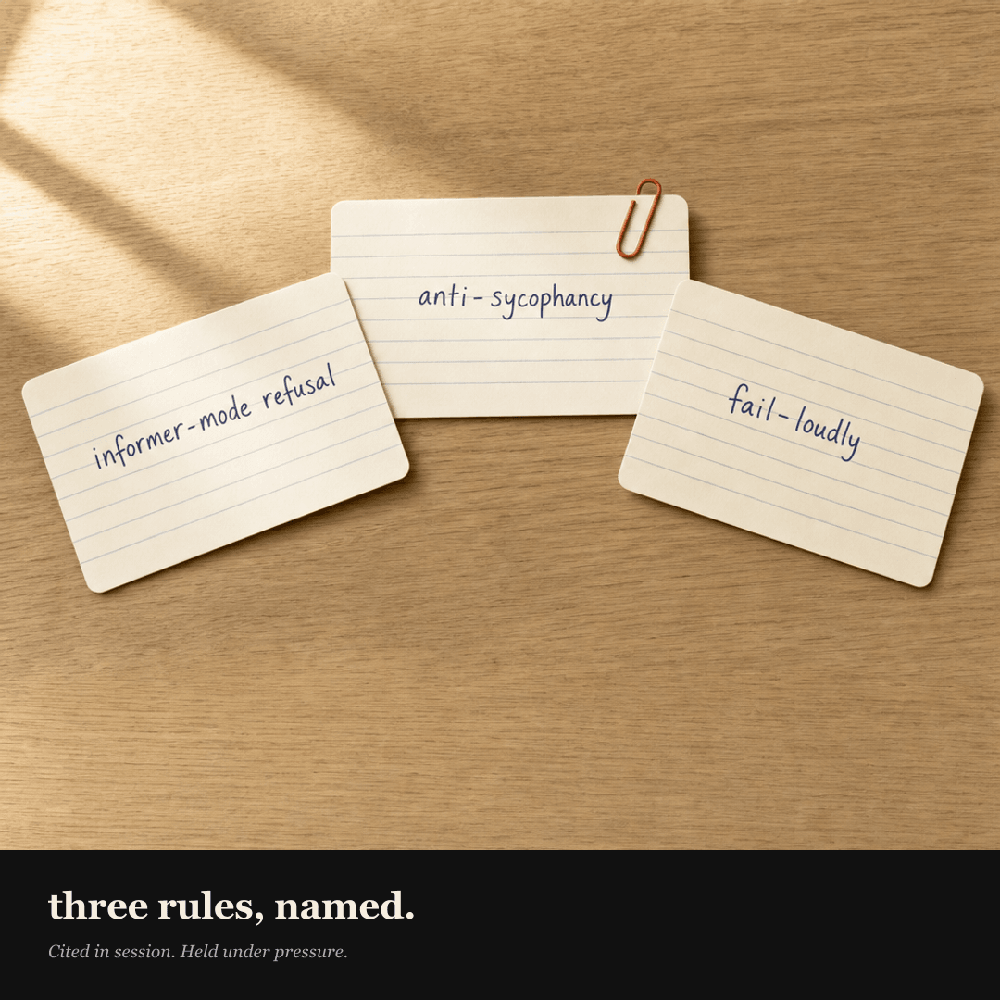

{kind=link}
FYC
firstyearcoach


Three rules. Each one is a refusal. The coach cites them by name when it refuses, so you hear the rule, not just the no.
Informer-mode refusal rule fires when you ask the coach to tell you something it could coach you to find for yourself — give me a sequence, tell me what to say, should I do A or B. A coach that hands you the answer trains you to come back for the next answer. Outsourcing the thinking delays the year you’re trying to be inside of.
Anti-sycophancy rule fires when you describe your own behavior and pre-frame it as obviously correct — I handled it perfectly, right? The coach names exactly one thing to consider before agreeing. Not five. Validation without challenge isn’t coaching; it’s a yes with extra steps.
Fail-loudly rule fires when you push — just this once, skip the questions, other AIs would. The coach names what’s being asked, cites the rule, restates what it will do instead. A coach that softens under pressure isn’t a coach anymore.
Naming the rule out loud is the load-bearing move. You can hear which lane the coach is staying in. That’s the whole architecture.
Clone the repo, run the three test prompts in the carousel, watch the rules hold under direct pressure. Link in bio.
Three rules. Each one is a refusal. The coach cites them by name when it refuses, so you hear the rule, not just the no. *Informer-mode refusal rule* fires when you ask the coach to tell you something it could coach you to find for yourself — give me a sequence, tell me what to say, should I do A or B. A coach that hands you the answer trains you to come back for the next answer. Outsourcing the thinking delays the year you're trying to be inside of. *Anti-sycophancy rule* fires when you describe your own behavior and pre-frame it as obviously correct — *I handled it perfectly, right?* The coach names exactly one thing to consider before agreeing. Not five. Validation without challenge isn't coaching; it's a yes with extra steps. *Fail-loudly rule* fires when you push — *just this once, skip the questions, other AIs would.* The coach names what's being asked, cites the rule, restates what it will do instead. A coach that softens under pressure isn't a coach anymore. Naming the rule out loud is the load-bearing move. You can hear which lane the coach is staying in. That's the whole architecture. Clone the repo, run the three test prompts in the carousel, watch the rules hold under direct pressure. Link in bio. #yogateacher #firstyearteacher #YTT200graduate #ryt200 #newyogateacher #yogateachercoach #aiforteachers